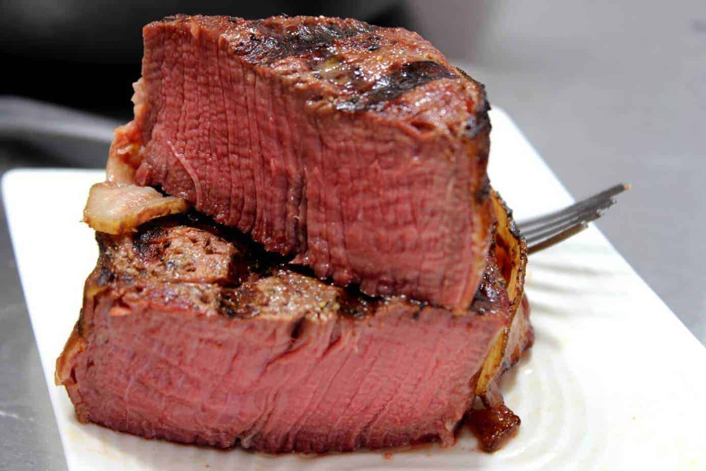

Filet Mignon

Description
Filet mignon is the smaller tip of tenderloin and one of the most expensive cuts of steak, due to its prized texture.
Fun fact: When filet mignon isn’t riding solo on your plate, it can also be a part of another cut—the T-bone.
The T-bone consists of strip steak on the bigger side of the bone, and filet mignon on the shorter side.
Ingredients
- 2 tablespoons of extra-virgin olive oil
- 4 six ounce filet mignon
- kosher salt
- freshly ground black pepper
- 4 tablespoons of butter
- a tablespoon of roughly chopped rosemary
Steps
- Preheat oven to 400°. In a large skillet over medium-high heat, heat oil. Season steak with salt and pepper on both sides. When oil is just about to smoke, add steak. Cook until very seared, about 5 minutes, then flip and add butter and rosemary. Baste with butter and cook another 3 to 5 minutes.
- Transfer skillet to oven and cook until cooked to your liking, about 5 minutes for medium. Pro tip: Check the temperature of your meat before transferring to the oven to see how far you are from the desired temperature. If you are within 10 degrees, you may need even less time. If your steak isn't done after 5 minutes, check every couple of minutes so you don't risk over cooking.
- Remove from pan and let rest 5 minutes before slicing.